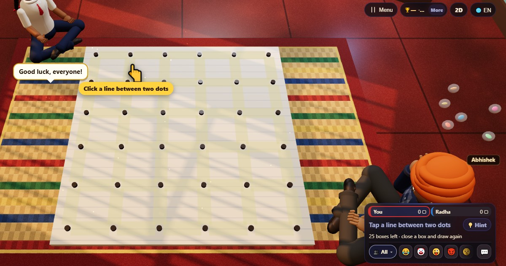

Punti e quadrati (Dots and Boxes)
- 👥 2–4 giocatori
- Giochi carta e penna
- 🆓
Guida in italiano
Traccia linee, chiudi quadrati e rigioca ogni volta che ci riesci.
English name: Dots and Boxes

Come si gioca
- A turno, traccia una linea tra due punti vicini.
- Se la tua linea chiude il quarto lato di un quadratino, è tuo, e devi tracciare ancora.
- La partita finisce quando sono tracciate tutte le linee.
Punteggio
Ogni quadratino che chiudi vale un punto.
Chi vince
Vince chi ha più quadratini. Se sono tutti pari, è pari.
Domande frequenti
Quanti possono giocare?
Da due a quattro, e il computer occupa i posti che vuoi.
Quanto è grande il tabellone?
Cinque quadratini per cinque, circa cinque-dieci minuti di gioco.
Modi di giocare
- Come ospite: Niente registrazione né accesso. Scegli un nome e gioca subito.
- Contro il computer: Se non c'è nessuno, i giocatori del computer occupano i posti liberi. Facile, normale o difficile.
- Online: Siediti a un tavolo pubblico con giocatori di tutto il mondo.
- Con gli amici vicini: Crea la partita su un telefono e condividi il codice o il QR. Gli amici entrano dal loro telefono.
- Su un solo telefono: Passatevi il telefono a turno: basta un dispositivo per tutta la famiglia.
Altre lingue
- हिन्दी: डॉट्स एंड बॉक्सेस
- Hinglish: Dots and Boxes
- Español: Timbiriche (puntos y cajas)
- Português: Jogo dos pontinhos
- Français: Pipopipette (points et carrés)
- Deutsch: Käsekästchen
- Bahasa Indonesia: Titik dan Kotak
- Türkçe: Kutu Kapmaca
- 日本語: ドット・アンド・ボックス
- 한국어: 점과 상자
- 中文: 点格棋
- Русский: Точки и квадраты
- اردو: ڈبے بناؤ
- नेपाली: थोप्ला र कोठा
- বাংলা: ঘর কাটাকাটি (ডটস অ্যান্ড বক্সেস)
- English: Dots and Boxes · Regole complete (inglese)
Idee di giochi
Tutti i giochi
 Test di Stroop
Test di Stroop Memoria dei numeri
Memoria dei numeri Indovina la parola
Indovina la parola Digitazione veloce
Digitazione veloce Bingo
Bingo Sblocca il parcheggio
Sblocca il parcheggio Tris
Tris Gioco della memoria
Gioco della memoria
In ChitPlay non ci sono soldi veri, scommesse o premi. I punti non hanno valore.